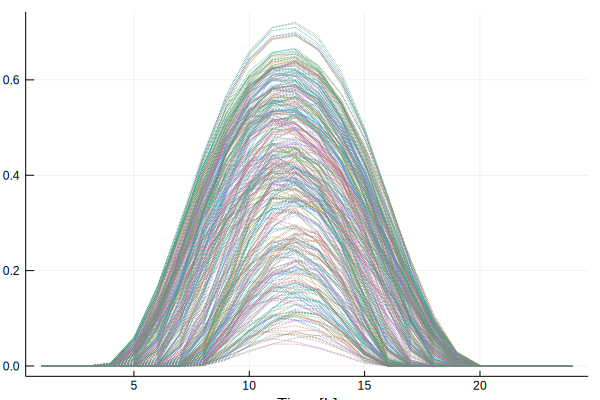

Load Data
Load Timeseries Data
load_timeseries_data() loads the data for a given application and region. Possible applications are
DAM: Day ahead market price dataCEP: Capacity Expansion Problem data
Possible regions are:
GER: GermanyCA: CaliforniaTX: Texas
The optional input parameters to load_timeseries_data() are the number of periods K and the number of time steps per period T. By default, they are chosen such that they result in daily time slices.
ClustForOpt.load_timeseries_data — Function.load_timeseriesdata(data_path::String; region::String="", K-#Periods, T-#Segments)- Loading all
*.csvfiles in the folder or the filedata_path
The *.csv files shall have the following structure and must have the same length: |Timestamp |[column names...]| |[iterator]|[values] | The first column should be called Timestamp if it contains a time iterator The other columns can specify the single timeseries like specific geolocation. Each column in [file name].csv file will be added to the ClustData.data called "[file name]-[column name]"
- region is an additional String to specify the loaded time series data
- K describes the number of periods in the input data
- T describes the length of each period
load_timeseriesdata(application::String, region::String, K-#Periods, T-#Segments)Loading from .csv files provided with the package in the folder ../ClustForOpt/data/{application}/{region}/TS Timestamp-column has to be called Timestamp Other columns have to be called with the location/node name for application:
DAM: Day Ahead MarketCEP: Capacity Expansion Problem
and regions:
"GER_1": Germany 1 node"GER_18": Germany 18 nodes"CA_1": California 1 node"CA_14": California 14 nodes"TX_1": Texas 1 node
Example loading timeseries data
using ClustForOpt
state="GER_1"
# laod ts-input-data
ts_input_data, = load_timeseries_data("CEP", state; K=365, T=24)
using Plots
plot(ts_input_data.data["solar-germany"], legend=false, linestyle=:dot, xlabel="Time [h]", ylabel="Solar availability factor [%]")
savefig("load_timeseries_data.svg")/home/travis/.julia/packages/GR/Q8slp/src/../deps/gr/bin/gksqt: error while loading shared libraries: libQt5Widgets.so.5: cannot open shared object file: No such file or directory
connect: Connection refused
GKS: can't connect to GKS socket application
Did you start 'gksqt'?
GKS: Open failed in routine OPEN_WS
GKS: GKS not in proper state. GKS must be either in the state WSOP or WSAC in routine ACTIVATE_WS
Load CEP Data
load_cep_data() lodes the extra data for the CEP and can take the following regions:
GER: GermanyCA: CaliforniaTX: Texas
ClustForOpt.load_cep_data — Function.load_cep_data(region::String)Loading from .csv files in a the folder ../ClustForOpt/data/CEP/{region}/ Follow instructions for the CSV-Files:
nodes:nodes x region, infrastruct, capacity-of-different-tech... in MW_elvar_costs:tech x [USD for fossils: in USD/MWh_el, CO2 in kg-CO₂-eq./MWh_el]# Variable costs per yearfix_costs:tech x [USD in USD/MW_el, CO2 in kg-CO₂-eq./MW_el]# Fixed costs per yearcap_costs:tech x [USD in USD/MW_el, CO2 in kg-CO₂-eq./MW_el]# Entire (NOT annulized) Costs per Investment in technologytechs:tech x [categ,sector,lifetime in years,effic in %,fuel]lines:lines x [node_start,node_end,reactance,resistance,power,voltage,circuits,length]
for regions:
"GER_1": Germany 1 node"GER_18": Germany 18 nodes"CA_1": California 1 node"CA_14": California 14 nodes"TX_1": Texas 1 node
Example loading CEP Data
using ClustForOpt
state="GER_1"
# laod ts-input-data
cep_data = load_cep_data(state)
cep_data.fix_costs| tech | region | year | EUR | CO2 | |
|---|---|---|---|---|---|
| String | String | Int64 | Float64 | Int64 | |
| 1 | pv | GER | 2015 | 24500.0 | 0 |
| 2 | wind | GER | 2015 | 42500.0 | 0 |
| 3 | coal | GER | 2015 | 52500.0 | 0 |
| 4 | oil | GER | 2015 | 13100.0 | 0 |
| 5 | gas | GER | 2015 | 7700.0 | 0 |
| 6 | bat_e | GER | 2015 | 5810.0 | 0 |
| 7 | bat_p | GER | 2015 | 0.0 | 0 |
| 8 | trans | GER | 2015 | 0.0 | 0 |